Chapter 8 Statistics in R
In this chapter, we are going to use R to firstly drawing the statistics in the plots and carry out statistical analysis.
library(dplyr)
library(ggplot2)
minneaplis <- read.csv('minneapolis.csv')8.1 Plotting statistics
8.1.1 Fitting the general trend of points
You could fit a line to see the general trend of the scatter plot by adding stat_smooth().
## select observations from 2017
minneapolis_2017 <- filter(minneaplis, YEAR == 2017)
p <- ggplot(minneapolis_2017, aes(AGE, INCTOT)) +
geom_point()
p + stat_smooth(method = 'lm') # fit a linear line for the points## `geom_smooth()` using formula 'y ~ x'## Warning: Removed 454 rows containing non-finite values (stat_smooth).## Warning: Removed 454 rows containing missing values (geom_point).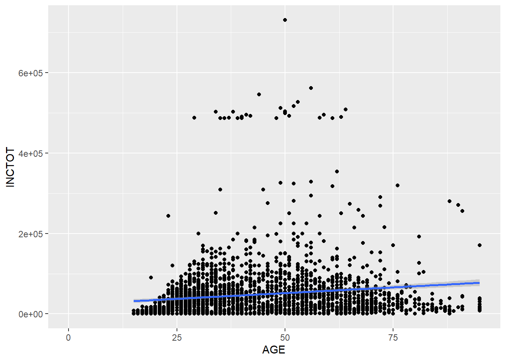
p + stat_smooth(method = 'loess') # non-linear line## `geom_smooth()` using formula 'y ~ x'## Warning: Removed 454 rows containing non-finite values (stat_smooth).## Warning: Removed 454 rows containing missing values (geom_point).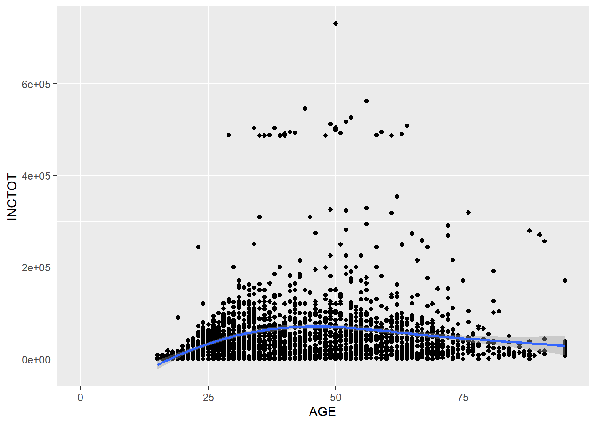
It seems that the non-linear relationship makes more sense.
8.1.2 Plotting distribution
You could draw a histogram for the dataset with geom_histogram().
p <- ggplot(minneapolis_2017, aes(AGE))
p + geom_histogram(binwidth = 5) # the width of each category is 5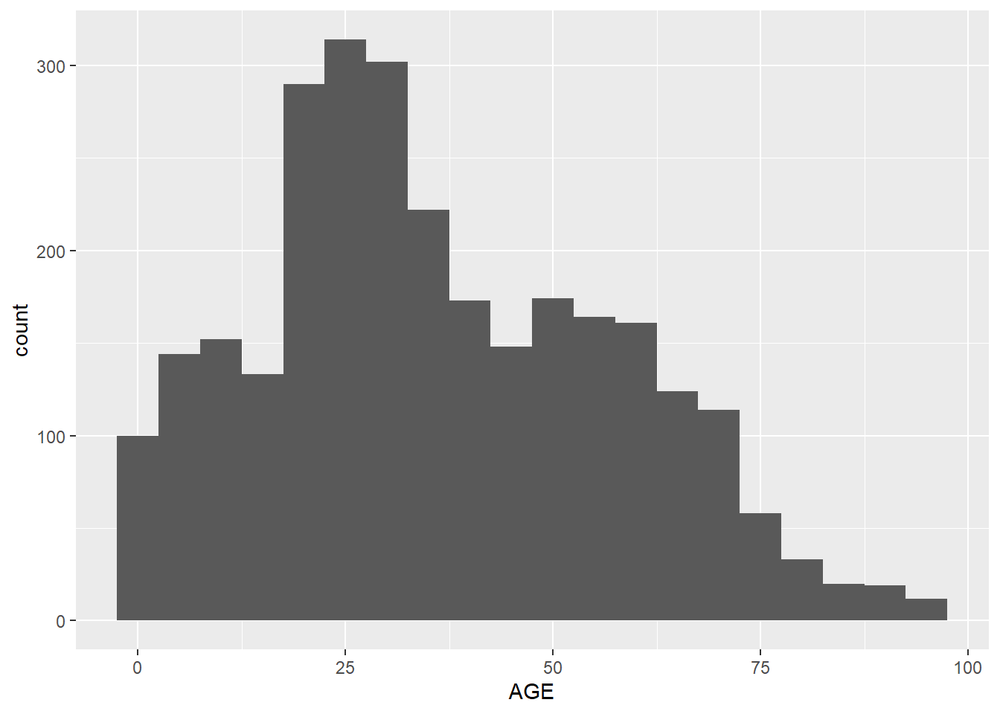
p + geom_histogram(bins = 30) # the number of bins is 30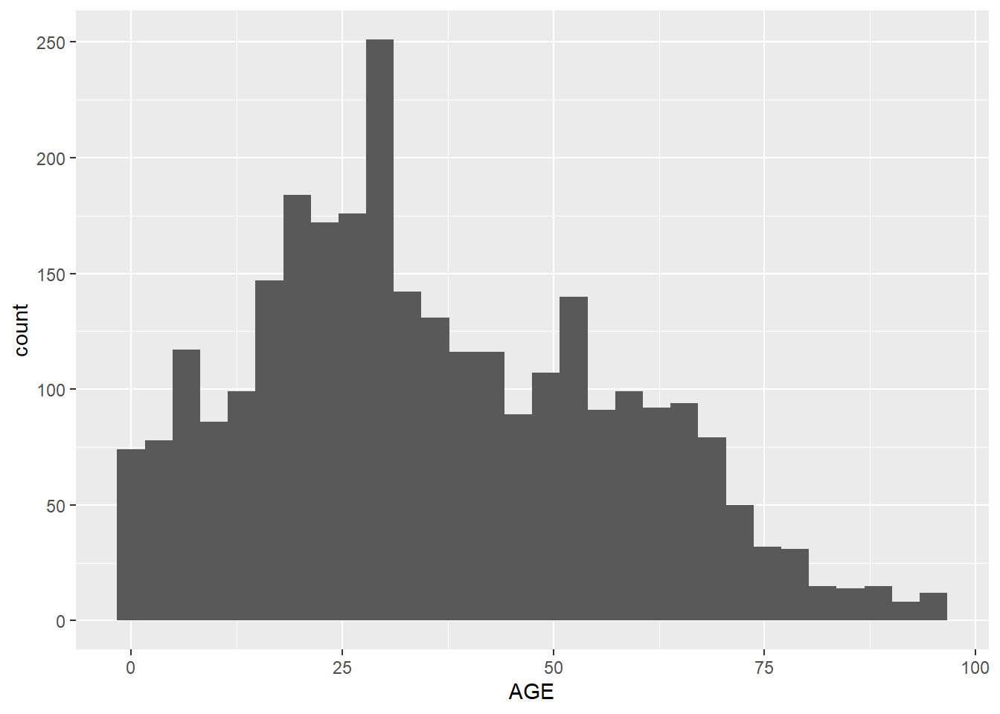
You could fit a density line for the histogram.
p + geom_histogram(aes( y = ..density..), binwidth = 5, col = 'Black', fill = 'White') + # use density instead of count
geom_density(alpha = .2, fill = 'Grey') 8.1.3 Density plot of distribution
geom_freqpoly() can serve a same purpose.
p + geom_freqpoly()## `stat_bin()` using `bins = 30`. Pick better value with `binwidth`.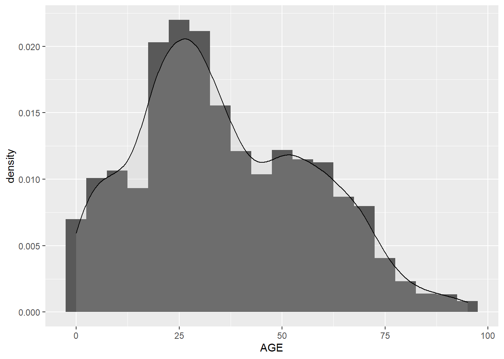
8.1.4 Box plot of distribution
Another way to show more statistics about your data is box plot, which we have been introduced before.
p <- ggplot(minneapolis_2017, aes(factor(SEX), INCTOT))
p + geom_boxplot()## Warning: Removed 454 rows containing non-finite values (stat_boxplot).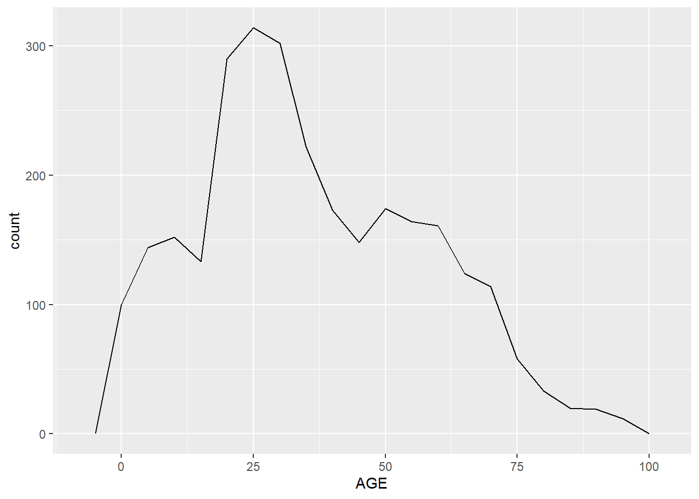
8.2 Anotation of statistics
We can use geom_text() to annotate the statistics in the plot.
8.2.1 bar plot
ggplot(minneapolis_2017, aes(x = RACE)) +
geom_bar() +
geom_text(aes(label = ..count..), stat = "count", vjust = 1.5, colour = "white")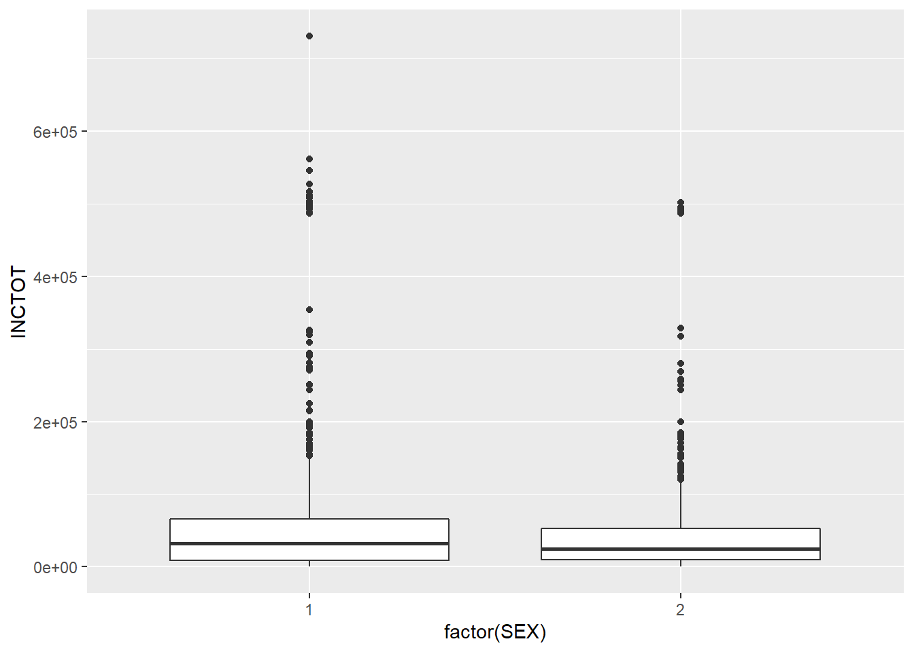
## count the number of respondents based on RACE
minneaplis_race <- minneapolis_2017 %>%
group_by(RACE) %>%
summarise(count = n())
ggplot(minneaplis_race, aes(RACE, count)) +
geom_col() +
geom_text(aes(label = count), vjust = -0.3)8.2.2 line plot
## calculate the average personal income for each year
minneapolis_year <- minneapolis %>%
group_by(YEAR) %>%
summarise(AvgInc = mean(INCTOT, na.rm = T))
ggplot(minneapolis_year, aes(YEAR, AvgInc)) +
geom_line(col = 'Blue') +
geom_text(aes(label = round(AvgInc)), vjust = -0.4) +
scale_x_continuous(breaks = c(2010:2019))## calculate the average personal income for each racial group in each year
minneapolis_year_race <- minneapolis %>%
group_by(YEAR, RACE) %>%
summarise(AvgInc = mean(INCTOT, na.rm = T))
## line plot of the trend of average personal income
ggplot(minneapolis_year_race, aes(YEAR, AvgInc, col = factor(RACE))) +
geom_line() +
geom_text(aes(label = round(AvgInc)), vjust = -0.4, color = 'black') +
scale_x_continuous(breaks = c(2010:2019))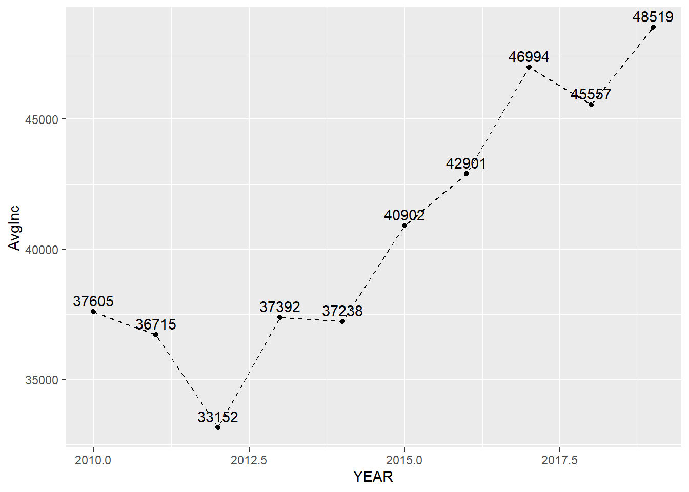
8.3 Simple statistics
We have touched some of the functions in this topic. For example, we could use mean() to compute the average value of a set of numbers.
8.3.1 Mean and median
We could use the base functions to do some simple statistical analysis directly.
mean(minneapolis_2017$AGE) # mean## [1] 36.0889median(minneapolis_2017$AGE) # median## [1] 328.3.2 Minimum and maximum value
min(minneapolis_2017$AGE) # minimum value## [1] 0max(minneapolis_2017$AGE) # maximum value## [1] 958.3.3 Quartile
x <- quantile(minneapolis_2017$AGE)
x # list of quartiles## 0% 25% 50% 75% 100%
## 0 20 32 52 95x[2] # select the value by its index## 25%
## 20You could add value from 0 to 1 in the quantile() to find a specific value, for example, 40%.
quantile(minneapolis_2017$AGE, 0.4) # 40% of the dataset## 40%
## 288.4 Linear regression
Before we start, let’s review some related knowledge first.
Regression is used to examine the linear relationships between the dependent variable and independent variables, where dependent variable is the one to be explained and independent variables (also called regressors, predictors, explanatory variables) are those may have influences on the dependent variable. For example, the dependent variable is personal income, and the independent variables are education, gender, age, etc. Among those independent variables, there are two types, one is continuous variable and the other is dummy variable. Continuous variable is variable with continuous values, such as income and age. Dummy variable is variable with values of 0 and 1. For example, gender, and people could use 1 for male, and 0 for female.
Suppose we have a dependent variable \(Y\), and two independent variables \(X_1\) and \(X_2\), the regression model in assumption could be expressed as below,
\[Y = \beta_0 + \beta_1X_1 + \beta_2X_2 + \epsilon\].
Where, \(\beta_0\) is the intercept, \(\beta_1\) and \(\beta_2\) are coefficients for \(X_1\) and \(X_2\), \(\epsilon\) is the error term which is the part of the dependent variable which cannot be explained by the intercept and independent variables. The target of regression is to estimate the value of \(\beta_0\), \(\beta_1\), and \(\beta_2\), and test their significance. The coefficients for the independent variables stand for that if the independent variable change one unit, the dependent variable will change the amount of the coefficients.
The estimated model could be expressed as,
\[\hat{Y} = \hat{\beta_0} + \hat{\beta_1}X_1 + \hat{\beta_2}X_2\]
Those variables with hat are estimated variables.
While regression provides the estimated values of intercepts and coefficients, it also provides the significance of these estimates with p-values. When p-value is smaller, the estimates tend to be more significant. In R, the function will use some marks to indicate the significance levels. The significance level is the probability that the estimates are ‘true.’
| Mark | Descriptions of significance level |
|---|---|
| . | 90% |
| * | 95% |
| ** | 99% |
| *** | 99.9% |
To quantify the fitness of the model, we use \(R^2\) with value from 0 to 1. When \(R^2\) is close to 1, the model fits the dataset well. \(R^2\) has a property that when adding more independent variables in the regression model, the \(R^2\) will increase. There is another index called adjusted \(R^2\), which considers the number of variables in the models.
Our example is the Minneapolis ACS population dataset, and we want to explore the relationship between EDUC (Education level) and AGE (Age). Let’s draw a scatter plot to see their distribution.
ggplot(minneapolis_2017, aes(AGE, EDUC)) +
geom_point() Because there are many overlapped points, we could add some noise to the positions of the points to help show all the points.
Because there are many overlapped points, we could add some noise to the positions of the points to help show all the points.
ggplot(minneapolis_2017, aes(AGE, EDUC)) +
geom_jitter(size = 0.5) ## add some noise to the positions of the points and set the size of the points to be 0.5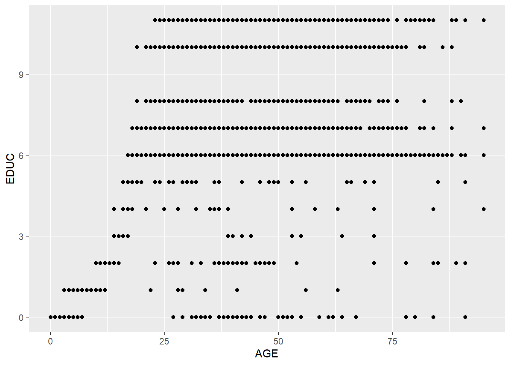
Based on the plot, it seems there is a positive relationship between these two variables. We add a linear line to fit them with geom_smooth().
ggplot(minneapolis_2017, aes(AGE, EDUC)) +
geom_jitter(size = 0.5) +
geom_smooth(method = 'lm')## `geom_smooth()` using formula 'y ~ x'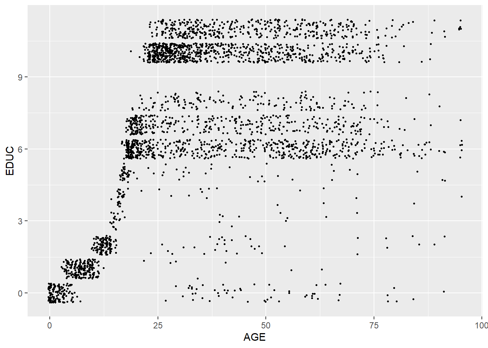
To quantify this linear relationship, We could use lm() function to fit this linear relationship and use summary() function to see the result. In the function, the formula indicates the model in assumption. Here, our model in assumption is,
\[EDUC = \beta_0 + \beta_1 \times AGE + \epsilon\]
When we code this model in R, we do
EDUC ~ AGEWe only need to write down the variable names of the dependent variable and independent variables, and use ~ to connect them. No need to write the intercept and error term.
We also need to indicate the name of the dataset in the function.
lm_fit <- lm(EDUC ~ AGE, # formula
data = minneapolis_2017) # dataset
summary(lm_fit) # check result##
## Call:
## lm(formula = EDUC ~ AGE, data = minneapolis_2017)
##
## Residuals:
## Min 1Q Median 3Q Max
## -11.1979 -2.8243 0.3888 2.7364 5.1528
##
## Coefficients:
## Estimate Std. Error t value Pr(>|t|)
## (Intercept) 4.037407 0.114684 35.20 <2e-16 ***
## AGE 0.078687 0.002741 28.71 <2e-16 ***
## ---
## Signif. codes: 0 '***' 0.001 '**' 0.01 '*' 0.05 '.' 0.1 ' ' 1
##
## Residual standard error: 3.102 on 2855 degrees of freedom
## Multiple R-squared: 0.224, Adjusted R-squared: 0.2237
## F-statistic: 824.1 on 1 and 2855 DF, p-value: < 2.2e-16The summarized result provides details about the model results, such as the coefficients and p-values, the model’s \(R^2\), etc.
Based on the information, we could know that the estimated coefficient for the intercept is 4.04, its p-value is \(< 2e-16\) with a mark \(***\), showing it is significant at 99.9% level. The estimated coefficient for AGE is 0.08, its p-value is \(<2e-16\) with a mark \(***\), showing it is significant at 99.9% level.
We could also know the \(R^2\) is 0.224, and adjusted \(R^2\) is 0.2237.
We could use the codes below to check the \(R^2\) of the model directly.
summary(lm_fit)$r.squared # value of R2## [1] 0.2239978And get the values of the coefficients directly.
coefficients(lm_fit) # only check the coefficient## (Intercept) AGE
## 4.03740708 0.07868725The model can be improved. From the scatter plot between EDUC and AGE, many respondents get to their highest level of education before the age of 25. After 25, AGE has trivial influence on EDUC. We, then, are interested in the relationship before the age of 25.
minneapolis_age <- filter(minneapolis_2017, AGE <= 25)
ggplot(minneapolis_age, aes(AGE, EDUC)) +
geom_jitter(size = 0.5) +
geom_smooth(method = 'lm')## `geom_smooth()` using formula 'y ~ x'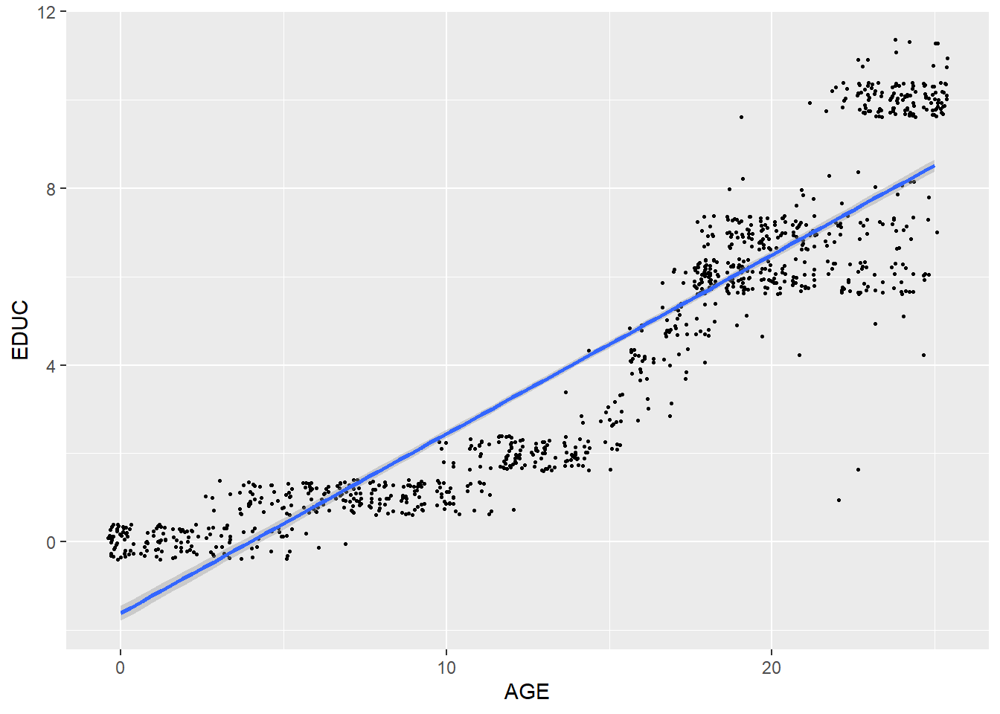
lm_fit <- lm(EDUC ~ AGE,
data = minneapolis_age)
summary(lm_fit) ##
## Call:
## lm(formula = EDUC ~ AGE, data = minneapolis_age)
##
## Residuals:
## Min 1Q Median 3Q Max
## -6.3077 -1.0348 -0.0909 0.9091 3.9091
##
## Coefficients:
## Estimate Std. Error t value Pr(>|t|)
## (Intercept) -1.615627 0.087077 -18.55 <2e-16 ***
## AGE 0.405604 0.005307 76.43 <2e-16 ***
## ---
## Signif. codes: 0 '***' 0.001 '**' 0.01 '*' 0.05 '.' 0.1 ' ' 1
##
## Residual standard error: 1.303 on 1006 degrees of freedom
## Multiple R-squared: 0.8531, Adjusted R-squared: 0.8529
## F-statistic: 5841 on 1 and 1006 DF, p-value: < 2.2e-16The model provides better fitness to the dataset now.
Most of the time, we need to examine the relationship between the dependent variable and more than one independent variable. In this case, drawing a plot to check the relationship before the analysis is not a good idea. We just do the regression directly.
The example below examines the relationship between EDUC and AGE, SEX, and RACE. when there is more than one independent variables, we use + to connect them in the formula. RACE is a categorical variable, so we transform it to a factor.
mlm_fit <- lm(EDUC ~ AGE + SEX + factor(RACE),
minneapolis_2017)
summary(mlm_fit)##
## Call:
## lm(formula = EDUC ~ AGE + SEX + factor(RACE), data = minneapolis_2017)
##
## Residuals:
## Min 1Q Median 3Q Max
## -10.4126 -2.2219 0.4191 2.4941 6.5838
##
## Coefficients:
## Estimate Std. Error t value Pr(>|t|)
## (Intercept) 5.020836 0.208105 24.126 <2e-16 ***
## AGE 0.070253 0.002684 26.170 <2e-16 ***
## SEX -0.044017 0.110679 -0.398 0.691
## factor(RACE)2 -2.413424 0.160769 -15.012 <2e-16 ***
## factor(RACE)3 -1.714259 0.159498 -10.748 <2e-16 ***
## ---
## Signif. codes: 0 '***' 0.001 '**' 0.01 '*' 0.05 '.' 0.1 ' ' 1
##
## Residual standard error: 2.957 on 2852 degrees of freedom
## Multiple R-squared: 0.2955, Adjusted R-squared: 0.2945
## F-statistic: 299.1 on 4 and 2852 DF, p-value: < 2.2e-16summary(mlm_fit)$r.squared## [1] 0.2955301Again, without careful research design, the relationships shown by the regression model are all correlations, not causalities.
8.5 Logistic regression
The above two examples both use continuous variables as their dependent variables. How about using a binomial variable (0 or 1 as its value) a dependent variable? Then we need to do logistic regression. There are many functions to do this. When interpreting the coefficients of the logistic regression result, the coefficient stands for the change of the log odds of the dependent variable to 1.
Here, we introduce the glm() function. We need to indicate family = binomial in the function.
## create a variable to indicate the poverty status of the respondents
minneapolis_poverty <- minneapolis_2017 %>%
filter(!is.na(INCTOT)) %>%
mutate(poverty = ifelse(INCTOT <= 12228, 1, 0))
## logistic regression
logit_reg <- glm(poverty ~ AGE + EDUC + SEX + factor(RACE),
minneapolis_poverty,
family = binomial)
summary(logit_reg)##
## Call:
## glm(formula = poverty ~ AGE + EDUC + SEX + factor(RACE), family = binomial,
## data = minneapolis_poverty)
##
## Deviance Residuals:
## Min 1Q Median 3Q Max
## -2.3815 -0.7066 -0.5090 0.8830 2.8188
##
## Coefficients:
## Estimate Std. Error z value Pr(>|z|)
## (Intercept) 3.018926 0.270700 11.152 < 2e-16 ***
## AGE -0.031852 0.002971 -10.720 < 2e-16 ***
## EDUC -0.367547 0.022532 -16.312 < 2e-16 ***
## SEX 0.096235 0.101052 0.952 0.341
## factor(RACE)2 0.646833 0.145549 4.444 8.83e-06 ***
## factor(RACE)3 0.168694 0.146323 1.153 0.249
## ---
## Signif. codes: 0 '***' 0.001 '**' 0.01 '*' 0.05 '.' 0.1 ' ' 1
##
## (Dispersion parameter for binomial family taken to be 1)
##
## Null deviance: 2983.5 on 2402 degrees of freedom
## Residual deviance: 2391.9 on 2397 degrees of freedom
## AIC: 2403.9
##
## Number of Fisher Scoring iterations: 4Most of the information is similar with regression ones except that the logistic regression does not have \(R^2\) and adjusted \(R^2\). It uses AIC (Akaike information criterion) in indicate the goodness of the model. If one model has smaller AIC, it is better.